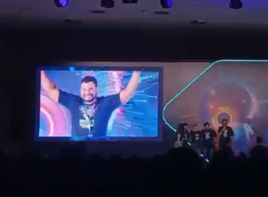

Prêmio de R$ 10.000
Vencedor da 1ª fase do hackathon de IA com foco em processos corporativos.
Sou Patrick Ataíde. No GitHub, o Playwright se define como framework de automação e testes web: conduz Chromium, Firefox e WebKit com uma única API, nos testes, nos scripts e como ferramenta para agentes de IA.
Cada fatia é uma ferramenta do currículo. Qualidade, desenvolvimento, integração, automação, dados e infraestrutura.
O centro do mapa. Ao redor, as tecnologias usadas no trabalho de automação e qualidade.

Participação ativa em Hackathons de inteligência artificial, com premiação nas soluções de processo corporativo.
Vencedor da 1ª fase do hackathon de IA com foco em processos corporativos.
Apoio técnico para infraestrutura e APIs.
Redes de Computadores pela Universidade Joaquim Nabuco (2009).
Pós-graduação lato sensu em Teste e Qualidade de Software QA pela UNINASSAU (2024).
Universidade Joaquim Nabuco. Redes de computadores.
Pós-graduação lato sensu pela UNINASSAU Teste e Qualidade de Software QAE.
Presença web para nichos diferentes, com o mesmo cuidado de estrutura.
Presença digital sóbria para escritório jurídico.
Ver projetoSite institucional para saúde e reabilitação.
Ver projetoEstúdio de yoga, com aulas, loja e viagens.
Ver projetoE-mail, telefone, LinkedIn ou WhatsApp.

Profissional multipotencial com mais de 20 anos de experiência em Tecnologia da Informação, atuando de forma estratégica na conexão entre negócio, dados e tecnologia. Atualmente como Consultor de Sistemas e Automações Sênior, com foco em Quality Assurance (QA), integração de sistemas, automação de processos e eficiência operacional.
Especialista em infraestrutura de TI desde 2004, com sólida atuação em ambientes Microsoft e Linux, administração de servidores, redes corporativas, suporte de alta criticidade e projetos de cabeamento estruturado, sempre alinhado às melhores práticas de disponibilidade, segurança e continuidade.
Em 2017, participou da implantação do projeto de CDN do Facebook, responsável pela implementação de 24 servidores de CDN, contribuindo para a otimização da entrega de conteúdo e escalabilidade da infraestrutura em ambiente de alta demanda.
Atuação consistente em automação, RPA e integração de sistemas, com desenvolvimento de APIs RESTful e rotinas em Python e Flask integradas a ERPs e sistemas legados. Domínio avançado em Banco de Dados (Oracle SQL e Microsoft SQL Server), incluindo modelagem, queries complexas, procedures, views e construção de relatórios e dashboards gerenciais.
Experiência em ambientes containerizados com Docker e práticas de DevOps, além de projetos de IoT e automações físicas com Raspberry Pi. Criador e mantenedor do Framework Aurora 9, estrutura corporativa que abrange o ciclo de vida completo de automações (Governança, Gestão Ágil, Versionamento, Desenvolvimento, QA, Orquestração, Documentação e Monitoramento), utilizando Docker, GitLab e Uptime Kuma.
Perfil analítico, orientado a resultados, padronização, melhoria contínua e inovação, com forte capacidade de atuação transversal entre áreas técnicas e de negócio.